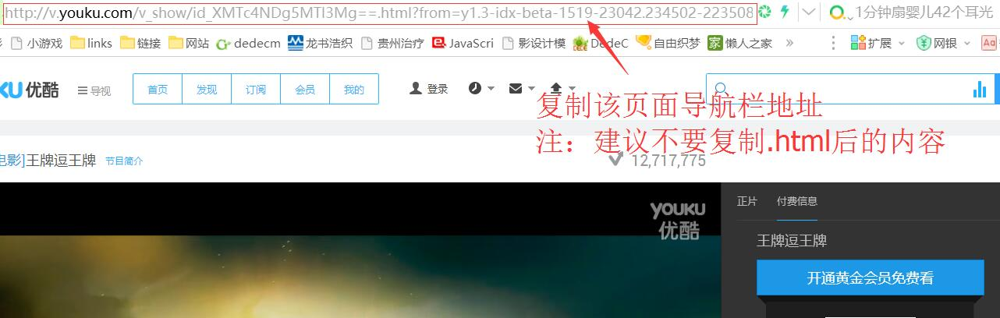
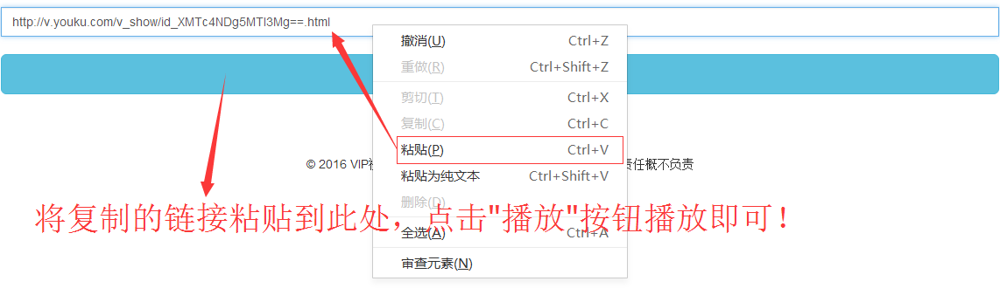

1.首先打开优酷网官方地址：http://www.youku.com/ 找到你想要看的视频
2.打开之后复制当前视频的完整地址栏
3.粘贴到本页面，点击播放按钮即可~无需任何账号,费用全免！

问：什么是免费vip视频在线解析？
答：你去爱奇艺、优酷、腾讯、芒果、乐视等官网看VIP视频是需要VIP才可以观看的，那么你只需要把观看视频的地址复制到本站解析地址即可免费观看！
电脑用户使用方法如上，非常简单，手机用户进入视频站后，点分享，复制链接到本站解析地址即可。最好在本站主页下方，直接搜索(你要看的电影名)播放，一步到位